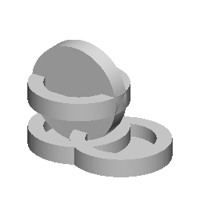
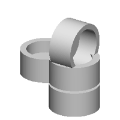
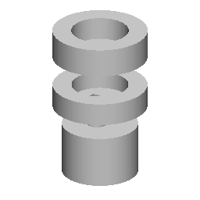
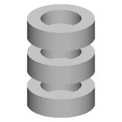
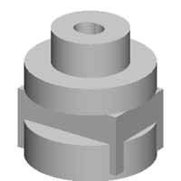
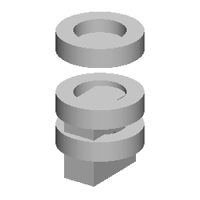

| 정답 |  | | |
| 0 | — | 실행 실패
StdFail_NotDone: GC_MakeArcOfCircle::Value() - no result
4 째 줄 | 1 import cadquery as cq
2 w0=cq.Workplane('YZ',origin=(29,0,0))
3 w1=cq.Workplane('YZ',origin=(30,0,0))
4 r=w0.sketch().segment((18,15),(20,15)).arc((21,17),(22,15)).segment((24,15)).segment((24,18)).segment((18,18)).close().assemble().finalize().extrude(-100).union(w1.sketch().arc((19,33),(21,36),(24,38)).arc((22,40),(20,42)).arc((19,38),(19,33)).assemble().finalize().extrude(70)) |
| 250 | — | 실행 실패
SyntaxError: unmatched ')'
1 째 줄 687 째 글자 | 1 cylinder(100,10), (0.0, 0.0), (0, 0.0), (0, 0.0), (0, 0.0), (0, 0.0), (0, 0.0), (0, 0.0), (0, 0.0), (0, 0.0), (0, 0.0), (0, 0.0), (0, 0.0), (0, 0.0), (0, 0.0), (0, 0.0), (0, 0.0), (0, 0.0), (0, 0.0), (0, 0.0), (0, 0.0), (0, 0.0), (0, 0.0), (0, 0.0), (0, 0.0), (0, 0.0), (0, 0.0), (0, 0.0), (0, 0.0), (0, 0.0), (0, 0.0), (0, 0.0), (0, 0.0), (0, 0.0), (0, 0.0), (0, 0.0), (0, 0.0), (0, 0.0), (0, 0.0), (0, 0.0), (0, 0.0), (0, 0.0), (0, 0.0), (0, 0.0), (0, 0.0), (0, 0.0), (0, 0.0), (0, 0.0), (0, 0.0), (0, 0.0), (0, 0.0), (0, 0.0), (0, 0.0), (0, 0.0), (0, 0.0), (0, 0.0), (0, 0.0), (0, 0.0), (0, 0.0), (0, 0.0), (0, 0.0), (0, 0.0), (0, 0.0), (0, 0.0), (0, 0.0), (0, 0.0), (0, 0.0), 0, 0.0), 0, 0.0), 0, 0.0), 0, 0.0), 0, 0.0), 0, 0.0), 0, 0.0), 0, 0.0), 0, 0.0), 0, 0.0), 0, 0.0), 0, 0.0), 0, 0.0), 0, 0.0), 0, 0.0), 0, 0.0), 0, 0.0), 0, 0.0), 0, 0.0), 0, 0.0), 0, 0.0), 0, 0.0), 0, 0.0), 0, 0.0), 0, 0.0), 0, 0.0), 0, 0.0), 0, 0.0), 0, 0.0), 0, 0.0), 0, 0.0), 0, 0.0), 0, 0.0), 0, 0.0), 0, 0.0), 0, 0.0), 0, 0.0), 0, 0.0), 0, 0.0), 0, 0.0), 0, 0.0), 0, 0.0), 0, 0.0), 0, 0.0), 0, 0.0), 0, 0.0), 0, 0.0), 0, 0.0), 0, 0.0), 0, 0.0), 0, 0.0), 0, 0.0), 0, 0.0), 0, 0.0), 0, 0.0), 0, 0.0), 0, 0.0), 0, 0.0), 0, 0.0), 0, 0.0), 0, ^ |
| 500 | — | 실행 실패
SyntaxError: '(' was never closed
3 째 줄 79 째 글자 | 1 b0 = place(cq.Workplane("XY").box(12.6, 25.1, 16.1, centered=(True, True, False)).faces(">Z").workplane(origin=(0, 0, 16.1)).center(10.7, 1.0).hole(10.7, 1.7), "x", (0.0, 0.0, 0.0))
2 b1 = place(cq.Workplane("XY").circle(3.6).extrude(10.5).faces(">Z").workplane(origin=(0, 0, 10.5)).center(10.7, 5.5).hole(10.7, 5.5), "z", (0.0, 0.0, 0.0))
3 b1 = place(cq.Workplane("XY").circle(10.7).union(w0.sketch().circle(10.7).rect(12.7, 10.7, 7.7, 2.2, 4.2, 4.2, 3.2, 3.2, 3.2, 3.2, 3.2, 3.2, 3.2, 3.2, 3.2, 3.2, 3.2, 3.2, 0.0, 0.0, 0.0, 0.0, 0.0, 0.0, 0.0, 0.0, 0.0, 0.0, 0.0, 0.0, 0.0, 0.0, 0.0, 0.0, 0.0, 0.0, 0.0, 0.0, 0.0, 0.0, 0.0, 0.0, 0.0, 0.0, 0.0, 0.0, 0.0, 0.0, 0.0, 0.0, 0.0, 0.0, 0.0, 0.0, 0.0, 0.0, 0.0, 0.0, 0.0, 0.0, 0.0, 0.0, 0.0, 0.0, 0.0, 0.0, 0.0, 0.0, 0.0, 0.0, 0.0, 0.0, 0.0, 0.0, 0.0, 0.0, 0.0, 0.0, 0.0, 0.0, 0.0, 0.0, 0.0, 0.0, 0.0, 0.0, 0.0, 0.0, 0.0, 0.0, 0.0, 0.0, 0.0, 0.0, 0.0, 0.0, 0.0, 0.0, 0.0, 0.0, 0.0, 0.0, 0.0, 0.0, 0.0, 0.0, 0.0, 0.0, 0.0, 0.0, 0.0, 0.0, 0.0, 0.0, 0.0, 0.0, 0.0, 0.0, 0.0, 0.0, 0.0, 0.0, 0.0, 0.0, 0.0, 0.0, 0.0, 0.0, 0.0, 0.0, 0.0, 0.0, 0.0, 0.0, 0.0, 0.0, 0.0, 0.0, 0.0, 0.0, 0.0, 0.0, 0.0, 0.0, 0.0, 0.0, 0.0, 0.0, 0.0, 0.0, 0.0, 0.0, 0.0, 0.0, 0.0, 0.0, 0.0, 0.0, 0.0, 0.0, 0 ^ |
| 750 |  | IoU 0.34 | 1 b0 = place(cq.Workplane("XZ").polyline([(0.0, 0.0), (29.6, 0.0), (29.6, 11.1), (20.6, 11.1), (20.6, 3.0), (0.0, 3.0)]).close().revolve(360, (0, 0, 0), (0, 1, 0)), "y", (0.0, 0.0, 0.0))
2 b1 = place(cq.Workplane("XZ").polyline([(0.0, 0.0), (29.6, 0.0), (29.6, 11.1), (20.6, 11.1), (20.6, 3.0), (0.0, 3.0)]).close().revolve(360, (0, 0, 0), (0, 1, 0)), "z", (0.0, 0.0, 0.0))
3 b2 = place(cq.Workplane("XZ").polyline([(0.0, 0.0), (29.6, 0.0), (29.6, 11.1), (20.6, 11.1), (20.6, 3.0), (0.0, 3.0)]).close().revolve(360, (0, 0, 0), (0, 1, 0)), "z", (0.0, 0.0, -27.7))
4 b3 = place(cq.Workplane("XZ").polyline([(0.0, 0.0), (29.6, 0.0), (29.6, 11.1), (20.6, 11.1), (20.6, 3.0), (0.0, 3.0)]).close().revolve(360, (0, 0, 0), (0, 1, 0)), "z", (29.6, 0.0, -27.7))
5 result = b0.union(b1.union(b2.union(b3))) |
| 1000 | — | 실행 실패
SyntaxError: '(' was never closed
6 째 줄 36 째 글자 | 1 b0 = place(cq.Workplane("XZ").polyline([(0.0, 0.0), (29.9, 0.0), (29.9, 13.5), (15.0, 13.5), (15.0, 35.3), (0.0, 35.3)]).close().revolve(360, (0, 0, 0), (0, 1, 0)).faces(">Z").workplane(origin=(0, 0, 35.3)).center(1.9, 1.1).hole(10.0, 10.3), "z", (0.0, 0.0, 0.0))
2 b1 = place(cq.Workplane("XZ").polyline([(0.0, 0.0), (29.9, 0.0), (29.9, 13.7), (15.0, 13.7), (15.0, 35.7), (0.0, 35.7)]).close().revolve(360, (0, 0, 0), (0, 1, 0)).faces(">Z").workplane(origin=(0, 0, 35.7)).center(-1.1, -1.1).hole(1.9), "z", (0.0, 0.0, 35.7))
3 b2 = place(cq.Workplane("XZ").polyline([(0.0, 0.0), (29.9, 0.0), (29.9, 15.7), (15.0, 15.7), (15.0, 32.7), (0.0, 32.7)]).close().revolve(360, (0, 0, 0), (0, 1, 0)).faces(">Z").workplane(origin=(0, 0, 32.7)).center(-1.0, -1.1).rect(10.8, 10.5).cutBlind(-10.0).faces(">Z").workplane(origin=(0, 0, 32.7)).center(-1.0, -1.1).hole(10.0), "z", (0.0, 0.0, -27.7))
4 b3 = place(cq.Workplane("XZ").polyline([(0.0, 0.0), (29.7, 0.0), (29.7, 15.7), (15.7, 15.7), (15.7, 32.7), (0.0, 32.7)]).close().revolve(360, (0, 0, 0), (0, 1, 0)).faces(">Z").workplane(origin=(0, 0, 32.7)).center(-1.0, -1.1).hole(10.0, 10.7), "z", (0.0, 0.0, -27.7))
5 b4 = place(cq.Workplane("XZ").polyline([(0.0, 0.0), (29.7, 0.0), (29.7, 15.7), (15.7, 15.7), (15.7, 32.7), (0.0, 32.7)]).close().revolve(360, (0, 0, 0), (0, 1, 0)).faces(">Z").workplane(origin=(0, 0, 32.7)).center(-1.0, -1.1).hole(10.0, 10.7), "z", (0.0, 0.0, -37.7))
6 result = b0.union(b1.union(b2.union(b3.union(b4.union(b5)) ^ |
| 1250 | — | 실행 실패
ValueError: No pending wires present
1 째 줄 | 1 b0 = place(cq.Workplane("XZ").polyline([(0.0, 0.0), (16.7, 0.0), (16.7, 11.6), (10.0, 11.6), (10.0, 2.1), (0.0, 2.1)]).close().revolve(360, (0, 0, 0), (0, 1, 0)).faces(">Z").workplane(origin=(0, 0, 11.6)).center(-1.1, 1.1).rect(10.8, 6.8).cutBlind(-11.1).faces(">Z").workplane(origin=(0, 0, 11.6)).center(-1.1, 1.1).hole(10.1, 1.1).faces(">Z").workplane(origin=(0, 0, 11.6)).center(-1.2, 1.1).hole(10.0, 1.1).faces(">Z").workplane(origin=(0, 0, 11.6)).center(1.3, 1.0).hole(10.0, 1.0).cutBlind(-11.1), "z", (0.0, 0.0, 0.0))
2 b1 = place(cq.Workplane("XZ").polyline([(0.0, 0.0), (19.9, 0.0), (19.9, 12.0), (10.0, 12.0), (10.0, 32.2), (0.0, 32.2)]).close().revolve(360, (0, 0, 0), (0, 1, 0)).faces(">Z").workplane(origin=(0, 0, 32.2)).center(10.9, 10.4).rect(10.8, 5.8).cutBlind(-11.1), "z", (0.0, 0.0, 32.2))
3 b2 = place(cq.Workplane("XZ").polyline([(0.0, 0.0), (19.9, 0.0), (19.9, 12.7), (12.5, 12.7), (12.5, 32.2), (0.0, 32.2)]).close().revolve(360, (0, 0, 0), (0, 1, 0)).faces(">Z").workplane(origin=(0, 0, 32.2)).center(10.0, -10.1).hole(10.0, 10.1), "z", (36.5, 0.0, 0.0))
4 result = b0.union(b1.union(b2)) |
| 1500 | — | 실행 실패
NameError: name 'b4' is not defined
5 째 줄 | 1 b0 = place(cq.Workplane("XY").circle(29.2).extrude(31.1).faces(">Z").workplane(origin=(0, 0, 31.1)).center(1.1, -1.1).hole(11.1), "z", (0.0, 0.0, 0.0))
2 b1 = place(cq.Workplane("XY").box(32.2, 28.1, 10.0, centered=(True, True, False)).faces(">Z").workplane(origin=(0, 0, 10.0)).center(1.9, -1.0).hole(1.9).edges("|Z").fillet(3.7), "y", (0.0, 0.0, 0.0))
3 b2 = place(cq.Workplane("XY").circle(20.0).extrude(21.0).faces(">Z").workplane(origin=(0, 0, 21.0)).center(10.0, -1.0).hole(10.0, 10.0), "z", (0.0, 0.0, -27.0))
4 b3 = place(cq.Workplane("XY").circle(18.0).extrude(21.0).faces(">Z").workplane(origin=(0, 0, 21.0)).center(-1.0, -1.0).hole(11.0).faces(">Z").workplane(origin=(0, 0, 21.0)).center(-1.5, -1.0).hole(10.0).faces(">Z").workplane(origin=(0, 0, 21.0)).center(-1.5, -1.0).hole(10.0).faces(">Z").workplane(origin=(0, 0, 21.0)).center(-1.5, -1.0).hole(10.0).faces(">Z").workplane(origin=(0, 0, 21.0)).center(-1.5, -1.0).hole(10.0).faces(">Z").workplane(origin=(0, 0, 21.0)).center(-1.5, -1.0).hole(10.0).faces(">Z").workplane(origin=(0, 0, 21.0)).center(-1.5, -1.0).hole(10.0).faces(">Z").workplane(origin=(0, 0, 21.0)).center(1.5, -1.0).hole(10.0), "x", (0.0, 0.0, 21.0))
5 result = b0.union(b1.union(b2.union(b3.union(b4)))) |
| 1750 |  | IoU 0.47 | 1 b0 = place(cq.Workplane("XZ").polyline([(0.0, 0.0), (20.0, 0.0), (20.0, 20.0), (14.0, 20.0), (14.0, 6.9), (0.0, 6.9)]).close().revolve(360, (0, 0, 0), (0, 1, 0)).faces(">Z").workplane(origin=(0, 0, 20.0)).center(-1.9, 10.0).rect(10.8, 6.0).cutBlind(-11.2).faces(">Z").workplane(origin=(0, 0, 20.0)).center(-1.0, -1.0).hole(10.0, 10.0), "z", (0.0, 0.0, 0.0))
2 b1 = place(cq.Workplane("XZ").polyline([(0.0, 0.0), (20.0, 0.0), (20.0, 20.0), (15.0, 20.0), (15.0, 10.0), (0.0, 10.0)]).close().revolve(360, (0, 0, 0), (0, 1, 0)).faces(">Z").workplane(origin=(0, 0, 20.0)).center(-1.9, 10.0).hole(11.1).faces(">Z").workplane(origin=(0, 0, 20.0)).center(1.9, 1.1).hole(11.0), "z", (0.0, 0.0, -22.0))
3 b2 = place(cq.Workplane("XZ").polyline([(0.0, 0.0), (20.0, 0.0), (20.0, 20.0), (16.0, 20.0), (16.0, 3.8), (0.0, 3.8)]).close().revolve(360, (0, 0, 0), (0, 1, 0)).faces(">Z").workplane(origin=(0, 0, 20.0)).center(-1.2, -1.0).hole(11.1, 10.0), "x", (0.0, 0.0, 20.0))
4 b3 = place(cq.Workplane("XZ").polyline([(0.0, 0.0), (20.0, 0.0), (20.0, 20.0), (15.0, 20.0), (15.0, 10.0), (0.0, 10.0)]).close().revolve(360, (0, 0, 0), (0, 1, 0)).faces(">Z").workplane(origin=(0, 0, 20.0)).center(-1.2, -1.0).hole(11.2), "z", (-27.4, 0.0, 0.0))
5 result = b0.union(b1.union(b2.union(b3))) |
| 2000 |  | IoU 0.34 | 1 b0 = place(cq.Workplane("XZ").polyline([(0.0, 0.0), (25.0, 0.0), (25.0, 12.0), (15.0, 12.0), (15.0, 3.0), (0.0, 3.0)]).close().revolve(360, (0, 0, 0), (0, 1, 0)).faces(">Z").workplane(origin=(0, 0, 12.0)).center(-1.9, 1.0).rect(10.8, 6.7).cutBlind(-11.1).faces(">Z").workplane(origin=(0, 0, 12.0)).center(-1.3, -1.0).hole(1.9, 1.3), "z", (0.0, 0.0, 0.0))
2 b1 = place(cq.Workplane("XZ").polyline([(0.0, 0.0), (25.1, 0.0), (25.1, 15.0), (15.1, 15.0), (15.1, 3.0), (0.0, 3.0)]).close().revolve(360, (0, 0, 0), (0, 1, 0)).faces(">Z").workplane(origin=(0, 0, 15.0)).center(-1.5, -1.0).rect(10.8, 6.8).cutBlind(-11.1), "z", (0.0, 0.0, 29.9))
3 b2 = place(cq.Workplane("XY").circle(20.1).extrude(27.2).faces(">Z").workplane(origin=(0, 0, 27.2)).center(-1.3, -1.0).hole(11.1, 10.9), "z", (0.0, 0.0, -29.9))
4 result = b0.union(b1.union(b2)) |
| 2250 |  | IoU 0.32 | 1 b0 = place(cq.Workplane("XZ").polyline([(0.0, 0.0), (25.0, 0.0), (25.0, 15.0), (15.0, 15.0), (15.0, 3.0), (0.0, 3.0)]).close().revolve(360, (0, 0, 0), (0, 1, 0)).faces(">Z").workplane(origin=(0, 0, 15.0)).center(-1.9, 1.0).hole(1.9, 1.6).faces(">Z").workplane(origin=(0, 0, 15.0)).center(-1.0, 1.0).hole(1.9, 1.6), "z", (0.0, 0.0, 0.0))
2 b1 = place(cq.Workplane("XZ").polyline([(0.0, 0.0), (25.0, 0.0), (25.0, 15.0), (15.0, 15.0), (15.0, 3.9), (0.0, 3.9)]).close().revolve(360, (0, 0, 0), (0, 1, 0)), "z", (0.0, 0.0, 27.0))
3 b2 = place(cq.Workplane("XZ").polyline([(0.0, 0.0), (25.0, 0.0), (25.0, 15.0), (15.0, 15.0), (15.0, 3.9), (0.0, 3.9)]).close().revolve(360, (0, 0, 0), (0, 1, 0)).faces(">Z").workplane(origin=(0, 0, 15.0)).center(-1.5, -1.0).rect(10.8, 6.6).cutBlind(-11.2).faces(">Z").workplane(origin=(0, 0, 15.0)).center(-1.5, -1.0).hole(11.1, 10.0), "z", (0.0, 0.0, -27.0))
4 result = b0.union(b1.union(b2)) |
| 2500 |  | IoU 0.33 | 1 b0 = place(cq.Workplane("XZ").polyline([(0.0, 0.0), (25.0, 0.0), (25.0, 11.0), (15.0, 11.0), (15.0, 25.0), (0.0, 25.0)]).close().revolve(360, (0, 0, 0), (0, 1, 0)).faces(">Z").workplane(origin=(0, 0, 25.0)).center(-1.0, -1.0).hole(10.0, 11.0).faces(">Z").workplane(origin=(0, 0, 25.0)).center(1.0, -1.0).hole(10.0, 10.0), "z", (0.0, 0.0, 0.0))
2 b1 = place(cq.Workplane("XZ").polyline([(0.0, 0.0), (25.0, 0.0), (25.0, 15.0), (15.0, 15.0), (15.0, 29.8), (0.0, 29.8)]).close().revolve(360, (0, 0, 0), (0, 1, 0)).faces(">Z").workplane(origin=(0, 0, 29.8)).center(1.6, 1.0).hole(10.0, 10.6), "z", (0.0, 0.0, -25.1))
3 b2 = place(cq.Workplane("XZ").polyline([(0.0, 0.0), (25.1, 0.0), (25.1, 15.0), (15.0, 15.0), (15.0, 29.8), (0.0, 29.8)]).close().revolve(360, (0, 0, 0), (0, 1, 0)).faces(">Z").workplane(origin=(0, 0, 29.8)).center(1.7, -1.1).hole(10.0, 11.0), "z", (0.0, 0.0, -25.1))
4 b3 = place(cq.Workplane("XY").box(35.2, 31.1, 10.0, centered=(True, True, False)).faces(">Z").workplane(origin=(0, 0, 10.0)).center(1.0, -2.0).hole(10.0, 1.1), "z", (0.0, 0.0, -25.1))
5 b4 = place(cq.Workplane("XY").box(45.4, 31.1, 24.3, centered=(True, True, False)).faces(">Z").workplane(origin=(0, 0, 24.3)).center(1.9, -1.0).hole(10.0, 10.3), "z", (0.0, 0.0, -25.1))
6 result = b0.union(b1.union(b2.union(b3.union(b4)))) |
| 2750 |  | IoU 0.32 | 1 b0 = place(cq.Workplane("XZ").polyline([(0.0, 0.0), (25.0, 0.0), (25.0, 12.0), (15.0, 12.0), (15.0, 3.1), (0.0, 3.1)]).close().revolve(360, (0, 0, 0), (0, 1, 0)).faces(">Z").workplane(origin=(0, 0, 12.0)).center(-1.9, 1.0).hole(11.1, 10.3), "z", (0.0, 0.0, 0.0))
2 b1 = place(cq.Workplane("XZ").polyline([(0.0, 0.0), (25.0, 0.0), (25.0, 12.0), (15.0, 12.0), (15.0, 3.8), (0.0, 3.8)]).close().revolve(360, (0, 0, 0), (0, 1, 0)).faces(">Z").workplane(origin=(0, 0, 38.1)).center(-1.2, 1.1).hole(1.9, 1.3), "z", (0.0, 0.0, 38.1))
3 b2 = place(cq.Workplane("XZ").polyline([(0.0, 0.0), (25.0, 0.0), (25.0, 12.0), (15.0, 12.0), (15.0, 3.8), (0.0, 3.8)]).close().revolve(360, (0, 0, 0), (0, 1, 0)).faces(">Z").workplane(origin=(0, 0, 38.1)).center(-1.5, 1.1).hole(11.1, 14.0), "z", (0.0, 0.0, -19.9))
4 b3 = place(cq.Workplane("XY").box(35.2, 31.1, 20.0, centered=(True, True, False)).faces(">Z").workplane(origin=(0, 0, 20.0)).center(1.5, -1.0).hole(10.0, 10.0), "x", (0.0, 0.0, -19.9))
5 b4 = place(cq.Workplane("XY").box(45.3, 41.1, 20.4, centered=(True, True, False)).faces(">Z").workplane(origin=(0, 0, 20.4)).center(1.5, -1.0).hole(10.0, 10.4), "x", (0.0, 0.0, -19.9))
6 result = b0.union(b1.union(b2.union(b3.union(b4)))) |
| 3000 |  | IoU 0.40 | 1 b0 = place(cq.Workplane("XZ").polyline([(0.0, 0.0), (25.0, 0.0), (25.0, 15.0), (15.0, 15.0), (15.0, 3.0), (0.0, 3.0)]).close().revolve(360, (0, 0, 0), (0, 1, 0)).faces(">Z").workplane(origin=(0, 0, 15.0)).center(10.9, -1.0).rect(11.1, 8.7).cutBlind(-10.0).faces(">Z").workplane(origin=(0, 0, 15.0)).center(10.9, 1.0).hole(10.0, 8.0), "z", (0.0, 0.0, 0.0))
2 b1 = place(cq.Workplane("XZ").polyline([(0.0, 0.0), (25.0, 0.0), (25.0, 20.0), (15.0, 20.0), (15.0, 10.0), (0.0, 10.0)]).close().revolve(360, (0, 0, 0), (0, 1, 0)).faces(">Z").workplane(origin=(0, 0, 20.0)).center(10.9, 10.0).hole(10.9, 10.0), "x", (0.0, 0.0, 20.0))
3 b2 = place(cq.Workplane("XZ").polyline([(0.0, 0.0), (25.0, 0.0), (25.0, 20.0), (18.0, 20.0), (18.0, 3.9), (0.0, 3.9)]).close().revolve(360, (0, 0, 0), (0, 1, 0)).faces(">Z").workplane(origin=(0, 0, 20.0)).center(10.9, -10.0).hole(11.1), "z", (0.0, 0.0, -20.0))
4 b3 = place(cq.Workplane("XY").box(55.2, 41.1, 10.0, centered=(True, True, False)).faces(">Z").workplane(origin=(0, 0, 10.0)).center(10.0, -10.0).hole(10.0, 10.0), "z", (0.0, 37.7, 0.0))
5 b4 = place(cq.Workplane("XY").box(55.2, 49.2, 10.4, centered=(True, True, False)).faces(">Z").workplane(origin=(0, 0, 10.4)).center(10.0, -10.0).hole(10.4, 10.0).faces(">Z").workplane(origin=(0, 0, 10.4)).center(10.4, -1.0).hole(6.0), "z", (0.0, 0.0, -20.0))
6 result = b0.union(b1.union(b2.union(b3.union(b4)))) |